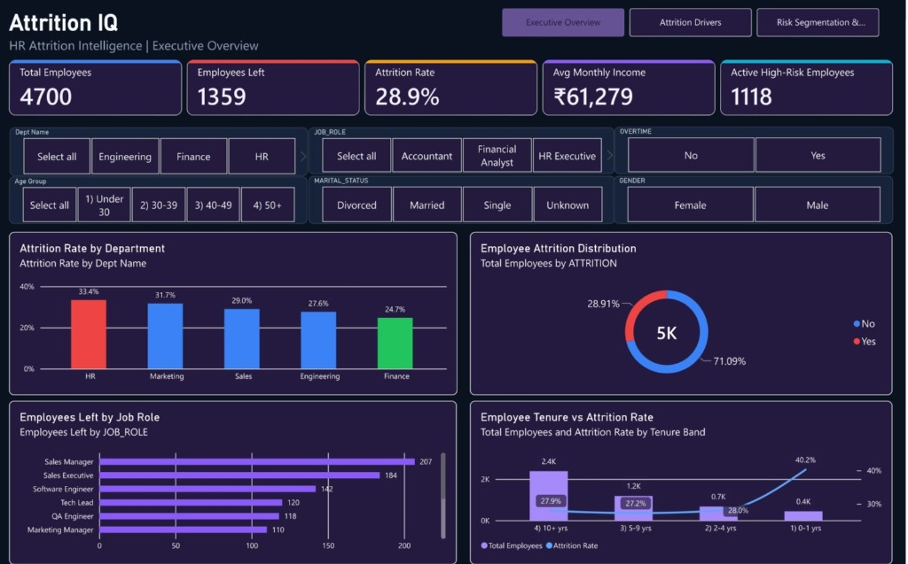

Streamlit • Random Forest
Machine Learning • Workforce Analytics
HR Attrition Intelligence (HR Attrition IQ)
Workforce analytics and predictive machine learning platform analyzing 4,700 employee records with Snowflake connectivity, Random Forest turnover forecasting, and interactive driver exploration.
Python
Streamlit
Scikit-learn
Snowflake
Plotly
Pandas